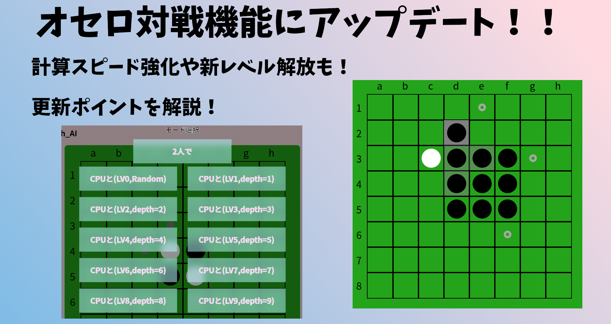
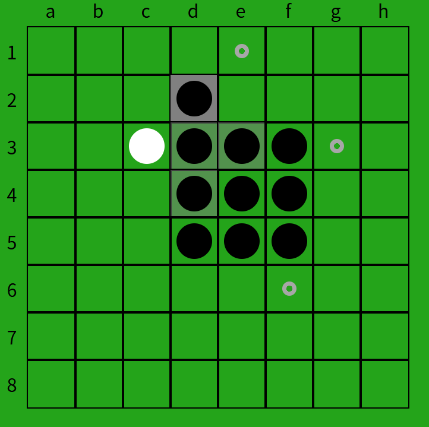
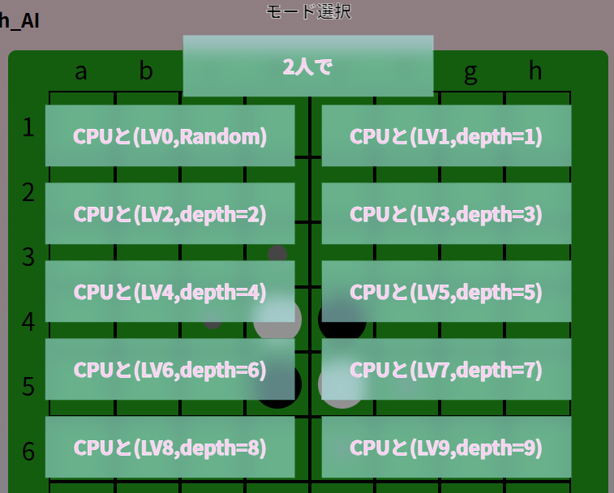

タイトルにもあるとおり、本サイトにて提供しているオセロゲーム機能にアップデートを行いました。
今回はその内容を紹介したいと思います。


上に示した画像のように、直前に石を置いたマスの背景が濃い灰色になるようになりました。
これにより、対局の流れを把握しやすくなります。
同じく示された画像のように、直前にひっくり返されたマスの背景は薄い灰色になるようになりました。 こちらの機能と上記の機能により、CPUによりすぐに盤面を更新されたとしても状況の把握がしやすくなります。
今まで、レベル5などになるとCPUが1手打つのに1分以上かかってしまっている場合がありましたが、この問題を解決いたしました。
これにより、快適に対戦をお楽しみいただけます。
今まではCPUのレベルとして0~5までを提供しておりました。しかし、今回の高速化に伴い新たなCPUのレベルを提供できるようになりました。
このサイトのオセロゲームにおける「レベル」とは、基本的にαβ法の先読みの手数のことを指しています。この数が増えるほど計算量が増加するため、さらなるレベルの解放には計算の高速化が必要でした。
しかしついにそれが実現したため、新たなレベル6~9を解放いたします。
さらなるオセロ上達に向けてぜひ挑戦してみてください！！
※Lv9は通常は8手読みですが、終盤はさらに深くまで先読みします。

そしてさらに、シンプルに評価関数を強化いたしました。
これにより、今までと同じレベルでも若干前より強くなっている可能性がございます。
新たなレベルにもぜひ挑戦しましょう！
具体的な強化点に関しては私の受験が終わったら記事にしたいと思います。
対局の結果をX(旧Twitter)で共有できるようになりました。
自分の成長の過程をSNSに残しましょう！
いかがでしたでしょうか？
これらの新機能により、より快適なオセロ体験が可能になること間違いなしです！
さらなる上達に向けて我々が販売している「e-Coach_AI」もぜひご活用ください！！
e-Coach_AIの紹介は↓こちら↓
また、アップデートを行ったオセロの対戦ページは↓こちら↓
次の記事↓
前回の記事↓
© 2025 ЯAMUNE